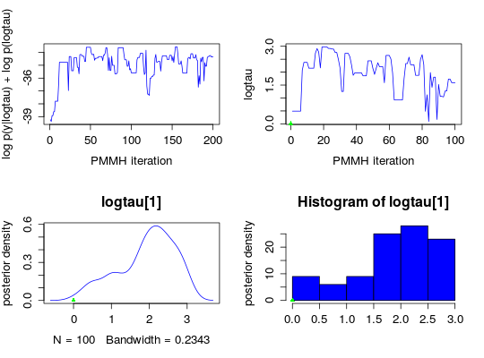
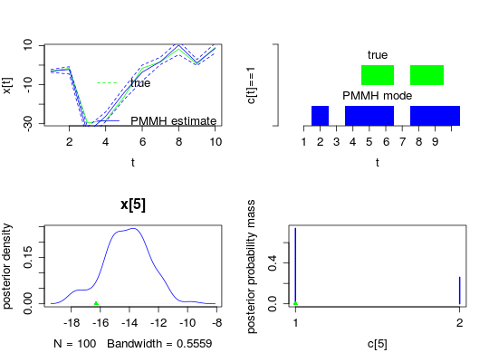

is.pmmh(object)"biips_pmmh_update"(object, n_iter, n_part, thin = 1, max_fail = 0, rw_adapt = TRUE, output = "p", ...)"biips_pmmh_samples"(object, n_iter, n_part, thin = 1, max_fail = 0, output = "p", ...)
pmmh object as returned by
biips_pmmh_init.thin
iterations (default = 1)TRUE).mcmcarray.list output. The string can contain several
characters in ('p', 'l', 'a', 's', 'f'). See details. (default = 'p')rs_thres and rs_type.
See biips_smc_samples for more details.is.pmmh returns TRUE if the object is of
class pmmh.
The methods biips_pmmh_update and biips_pmmh_update
return an object of class mcmcarray.list.
biips_pmmh_samples output contains one mcmcarray
member for each monitored variable returned by the param_names() and
latent_names() member functions of the pmmh object.
The members of the mcmcarray.list object are
mcmcarray objects for different variables. Assuming
dim is the dimension of the monitored variable, the
mcmcarray object is an array of dimension c(dim,
n_iter) with the following attributes (accessible with
attr):
If the output argument is not empty, the output contains
additional members. See details.
Manipulate PMMH objects.
The method biips_pmmh_update performs adaptation and burn-in
iterations for the PMMH algorithm.
The method biips_pmmh_samples performs iterations for the PMMH
algorithm and returns samples.
The output string arguments can be used to query additional
members in the mcmcarray.list output. If output
contains:
log_marg_like_pen. mcmcarray with penalized
log marginal likelihood estimates over iterations.log_marg_like. mcmcarray
with log marginal likelihood estimates over iterations.info$accept_rate. mcmcarray with acceptance
rate over iterations.info$rw_step. mcmcarray
with standard deviations of the random walk over iterations.info$n_fail. number of failed SMC algorithms.modelfile <- system.file('extdata', 'hmm.bug', package = 'Rbiips') stopifnot(nchar(modelfile) > 0) cat(readLines(modelfile), sep = '\n')var c_true[tmax], x_true[tmax], c[tmax], x[tmax], y[tmax] data { x_true[1] ~ dnorm(0, 1/5) y[1] ~ dnorm(x_true[1], exp(logtau_true)) for (t in 2:tmax) { c_true[t] ~ dcat(p) x_true[t] ~ dnorm(0.5*x_true[t-1]+25*x_true[t-1]/(1+x_true[t-1]^2)+8*cos(1.2*(t-1)), ifelse(c_true[t]==1, 1/10, 1/100)) y[t] ~ dnorm(x_true[t]/4, exp(logtau_true)) } } model { logtau ~ dunif(-3, 3) x[1] ~ dnorm(0, 1/5) y[1] ~ dnorm(x[1], exp(logtau)) for (t in 2:tmax) { c[t] ~ dcat(p) x[t] ~ dnorm(0.5*x[t-1]+25*x[t-1]/(1+x[t-1]^2)+8*cos(1.2*(t-1)), ifelse(c[t]==1, 1/10, 1/100)) y[t] ~ dnorm(x[t]/4, exp(logtau)) } }data <- list(tmax = 10, p = c(.5, .5), logtau_true = log(1)) model <- biips_model(modelfile, data)* Parsing model in: /home/adrien-alea/workspace/biips-git/Rbiips/inst/extdata/hmm.bug * Compiling data graph Declaring variables Resolving undeclared variables Allocating nodes Graph size: 168 Sampling data Reading data back into data table * Compiling model graph Declaring variables Resolving undeclared variables Allocating nodes Graph size: 180n_part <- 50 obj_pmmh <- biips_pmmh_init(model, 'logtau', latent_names = c('x', 'c[2:10]'), inits = list(logtau = -2)) # Initialize* Initializing PMMHis.pmmh(obj_pmmh)[1] TRUEout_pmmh_burn <- biips_pmmh_update(obj_pmmh, 100, n_part) # Burn-in* Adapting PMMH with 50 particles |--------------------------------------------------| 100% |++++++++++++++++++++++++++++++++++++++++++++++++++| 100 iterations in 0.49 sout_pmmh <- biips_pmmh_samples(obj_pmmh, 100, n_part, thin = 1) # Samples* Generating 100 PMMH samples with 50 particles |--------------------------------------------------| 100% |**************************************************| 100 iterations in 0.48 sdens_pmmh_lt <- biips_density(out_pmmh$logtau) summ_pmmh_x <- biips_summary(out_pmmh$x, order = 2, probs = c(0.025, 0.975)) dens_pmmh_x <- biips_density(out_pmmh$x) summ_pmmh_c <- biips_summary(out_pmmh[['c[2:10]']]) table_pmmh_c <- biips_table(out_pmmh[['c[2:10]']]) par(mfrow = c(2, 2)) plot(c(out_pmmh_burn$log_marg_like_pen, out_pmmh$log_marg_like_pen), type = 'l', col = 'blue', xlab = 'PMMH iteration', ylab = 'log p(y|logtau) + log p(logtau)') plot(out_pmmh$logtau[1, ], type = 'l', col = 'blue', xlab = 'PMMH iteration', ylab = 'logtau') points(0, model$data()$logtau_true, pch = 17, col = 'green') plot(dens_pmmh_lt, col = 'blue', ylab = 'posterior density') points(model$data()$logtau_true, 0, pch = 17, col = 'green') biips_hist(out_pmmh$logtau, col = 'blue', ylab = 'posterior density')points(model$data()$logtau_true, 0, pch = 17, col = 'green')
par(mfrow = c(2, 2)) plot(model$data()$x_true, type = 'l', col = 'green', xlab = 't', ylab = 'x[t]') lines(summ_pmmh_x$mean, col = 'blue') matlines(matrix(unlist(summ_pmmh_x$quant), data$tmax), lty = 2, col = 'blue') legend('topright', leg = c('true', 'PMMH estimate'), lty = c(2, 1), col = c('green', 'blue'), bty = 'n') barplot(.5*(model$data()$c_true==1), col = 'green', border = NA, space = 0, offset = 1, ylim=c(0,2), xlab='t', ylab='c[t]==1', axes = FALSE) axis(1, at=1:data$tmax-.5, labels=1:data$tmax) axis(2, line = 1, at=c(0,2), labels=NA) text(data$tmax/2, 1.75, 'true') barplot(.5*c(NA, summ_pmmh_c$mode==1), col = 'blue', border = NA, space = 0, axes = FALSE, add = TRUE) text(data$tmax/2, .75, 'PMMH mode') t <- 5 plot(dens_pmmh_x[[t]], col='blue', ylab = 'posterior density') points(model$data()$x_true[t], 0, pch = 17, col = 'green') plot(table_pmmh_c[[t-1]], col='blue', ylab = 'posterior probability mass')points(model$data()$c_true[t], 0, pch = 17, col = 'green')
biips_pmmh_init